The main goal of this part is to reach the target with certain input angles. To gain this goal, first we need to do forward kinematics and use optimization to find the right angles. Then we output the angles to the inverse kinematics part. The details are shown as follows:
1. Forward kinematics:
a. Use transformation matrix to determine the position of last link: The "eul2tform" function in MATLAB can turn the Euler angles into transformation matrix. We can calculate from first link to last link to get the transformation matrix T1, T2, ..., Tn from each joint. The final transformation matrix of last link (Tf) is simply the multiplication of each matrix, i.e. Tf=T1*T2*...*Tn.
2. Optimization:
a. Score function: The form of score function is (position - target)'*(position - target). It means the Euclidean distance between target and our position.
b. Penalty function: To avoid the joints reaching limit angles and links intersecting with obstacles, we add penalty function into score function in the form of alpha/distance. Here "alpha" is a constant to adjust the influence of penalty function, and "distance" is the distance from angle of joint to limit angle or distance from link to obstacles.
c. Optimization function: We choose the "fmincon" function in MATLAB to do optimization.
d. Optimization algorithm: SQP
3. Evaluation:
a. Use random initial joints to do optimization 20 times; Pick the finial joints with shortest distance from final position to target.
b. Set the random obstacles with number of 1, 3, 5, 7, 9, 15. The following plots show the links reach the target with different number of obstacles.
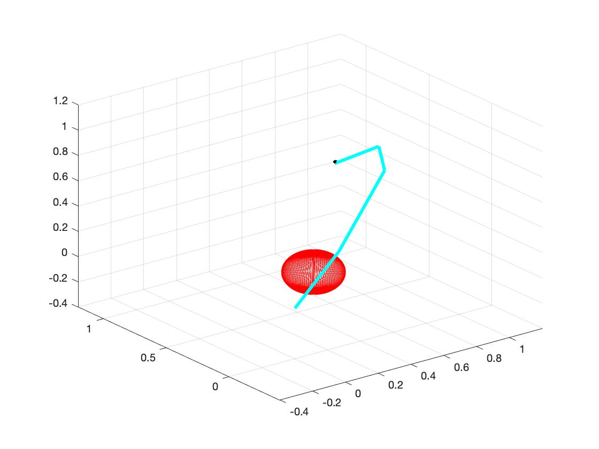 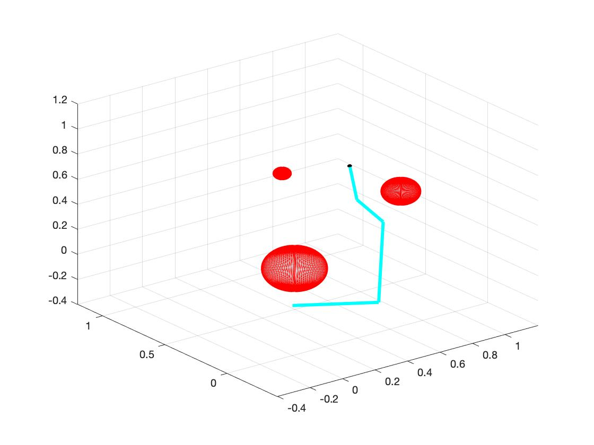 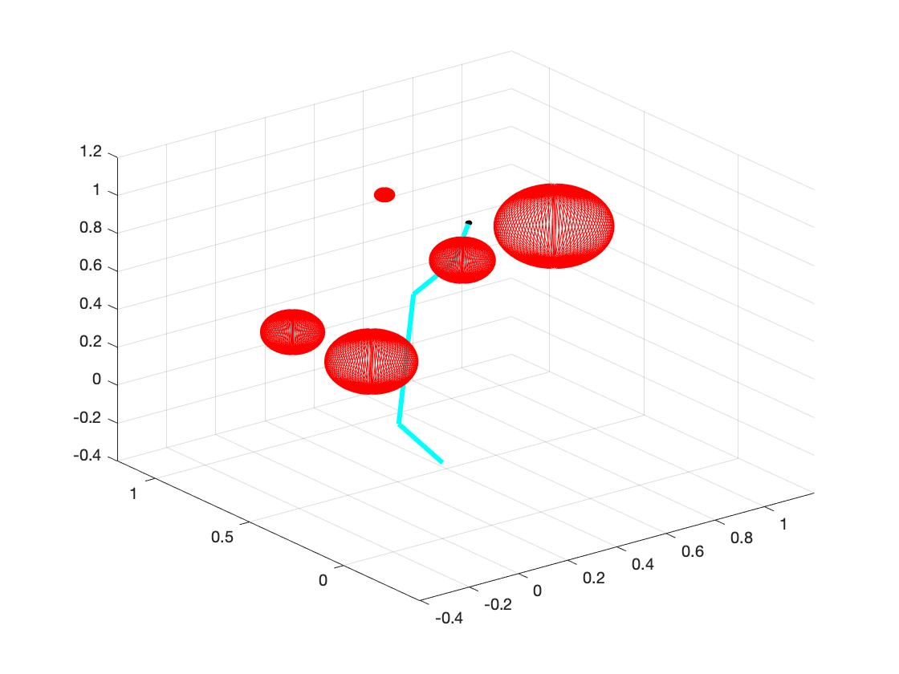
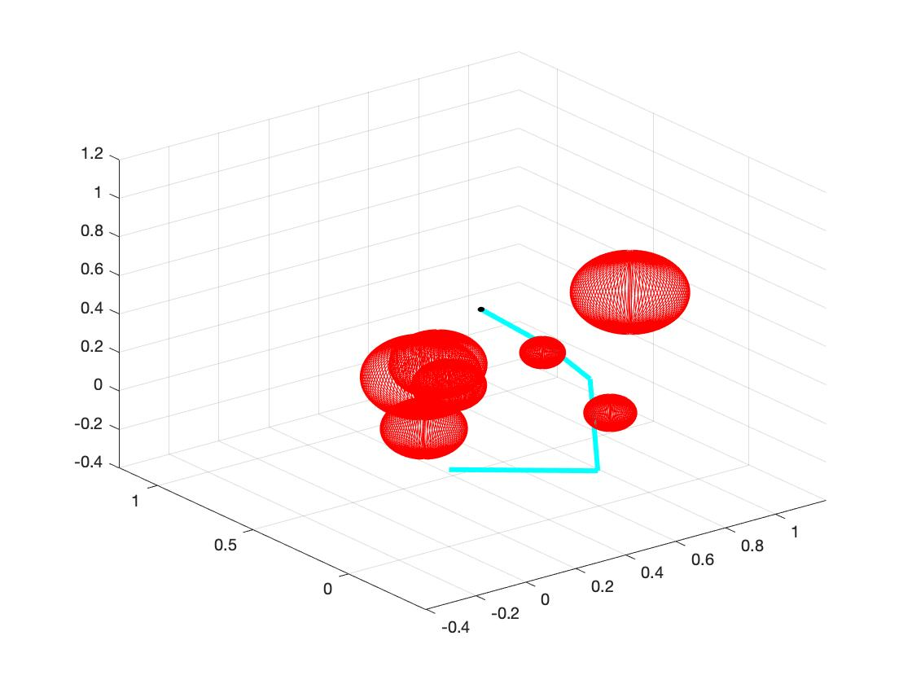 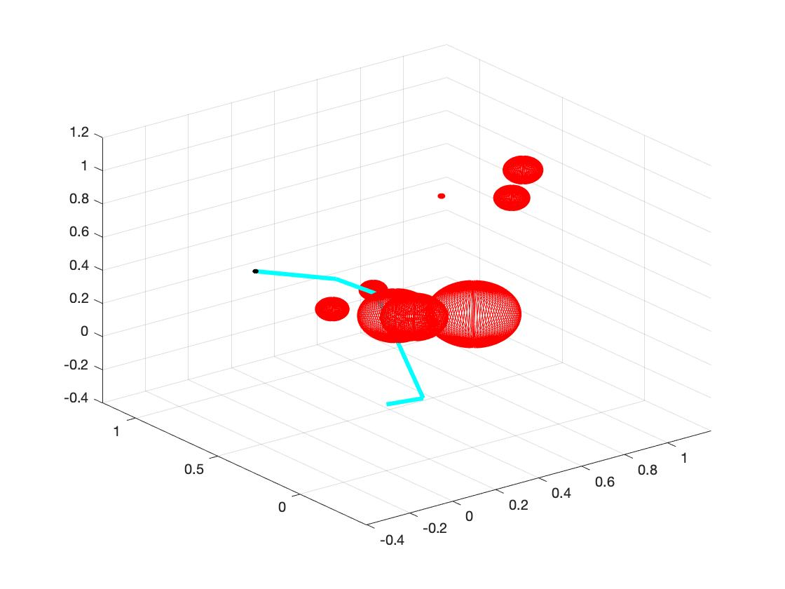 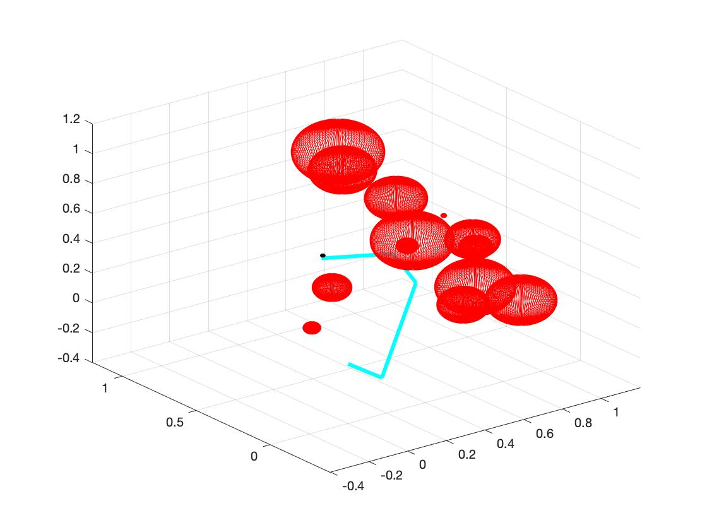
c. As the number of obstacles increases, the mean time of searching the target increases. (In fact I think the main reason of time increasing is not the number of obstacles, but is whether the position of obstacles "blocking" the links from target. Moreover, I think we can carefully examine the space that links can move and find out the influence of the position of obstacles.) The following plot shows the relation between time cost and number of obstacles. The red dots represent mean time of each number of obstacles.
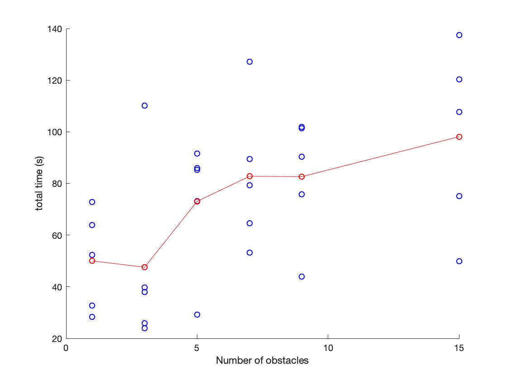
The task of this part is to test the influence of adding derivative.
1. Calculating Gradient:
a. We use differences to represent derivative of variable. For example, when we calculate the gradient of certain angle "angle", we add "epsilon" to this angle (angle+epsilon) and keep other angles unchanged to get new "score". Then we use new "score" minus origin score, and use "epsilon" dividing the result. I.e. gradient = (Score(angle+epsi)-Score(angle))/epsi.
2. Comparison to Non-gradient:
a. When using the gradient, the algorithm may be a little faster with certain initialization. But sometime the algorithm with gradient costs more time to find the minimum. As shown in the figure below, the blue points represent the algorithm with gradient and the red points represent the algorithm without gradient. The algorithm without gradient appears more steady. (I think gradient calculating method may influence the performance of algorithm with gradient.)
This part mainly tests the performance of different algorithms. We measure the time and distance from target to final position.
The test set has 3 obstacles and target is at (0.5, 0.5, 0.5) with quaternion value [1,0,0,0]. The radius of obstacles is 0.05 and obstacles are at position (0.3, 0.1, 0.1), (0.1, 0.3, 0.1), (0.1, 0.1, 0.3). The target and obstacles are shown as below on right.
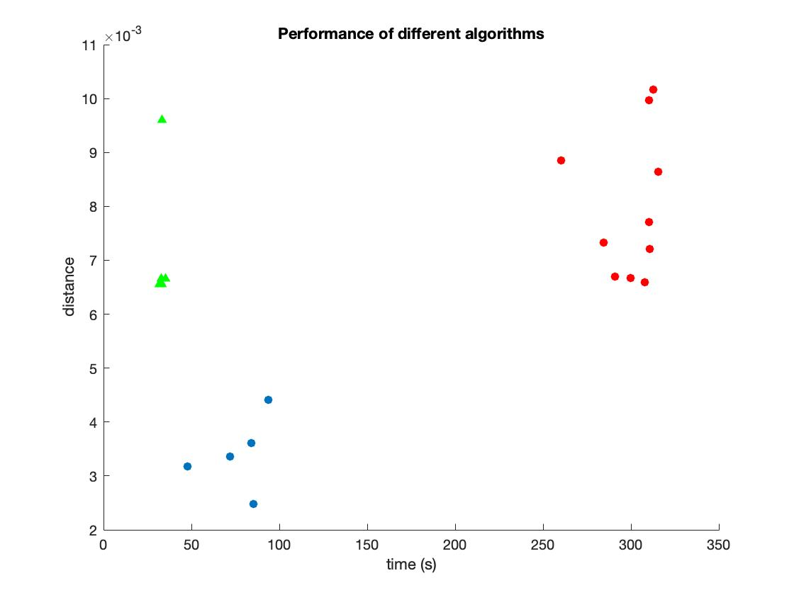 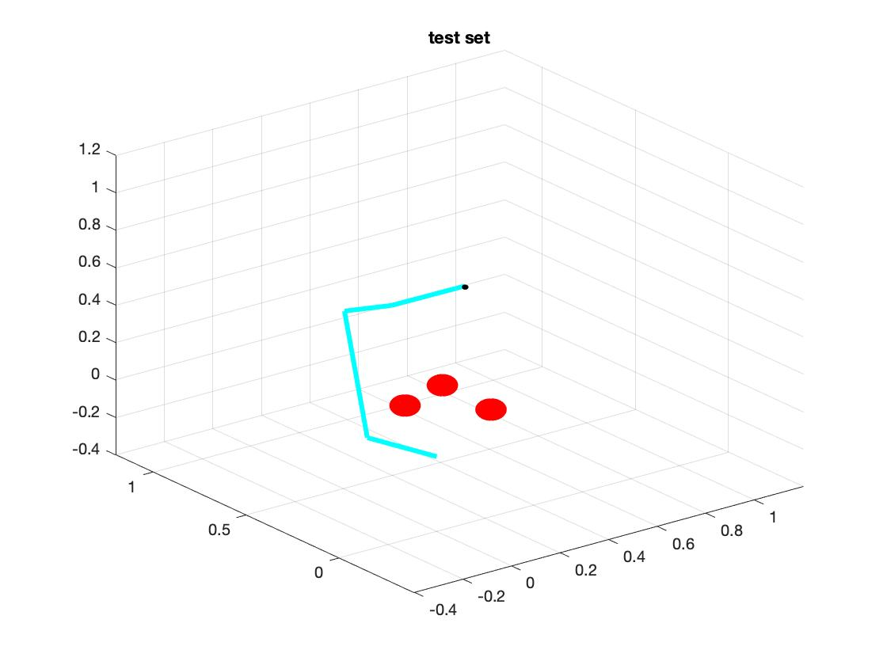
1. SQP:
The performance of SQP is shown as green triangle in above plot. We can see that the sqp have best performance with least time and medium distance.
2. Interior Point:
The performance of interior-point is shown as red circle in above plot. It has worst performance at this situation. The variance of its distance is large.
3. Active-Set:
(I cannot get the result from active-set. The algorithm could induce "NAN" when optimizating. But I find active-set run very fast. I hope I can tune my program to be suitable to this algorithm.)
4. Trust-Region-Reflective:
The performance of trust-region-reflective is shown as blue circle is above plot. It has better performance with shorter distance than "sqp", but it needs more time. (I think it could relate to my differential method, because I use the gradient mentioned in second part with difference. If I use more sophisticated differential method, the performance may be much better.)
5. CMA-ES:
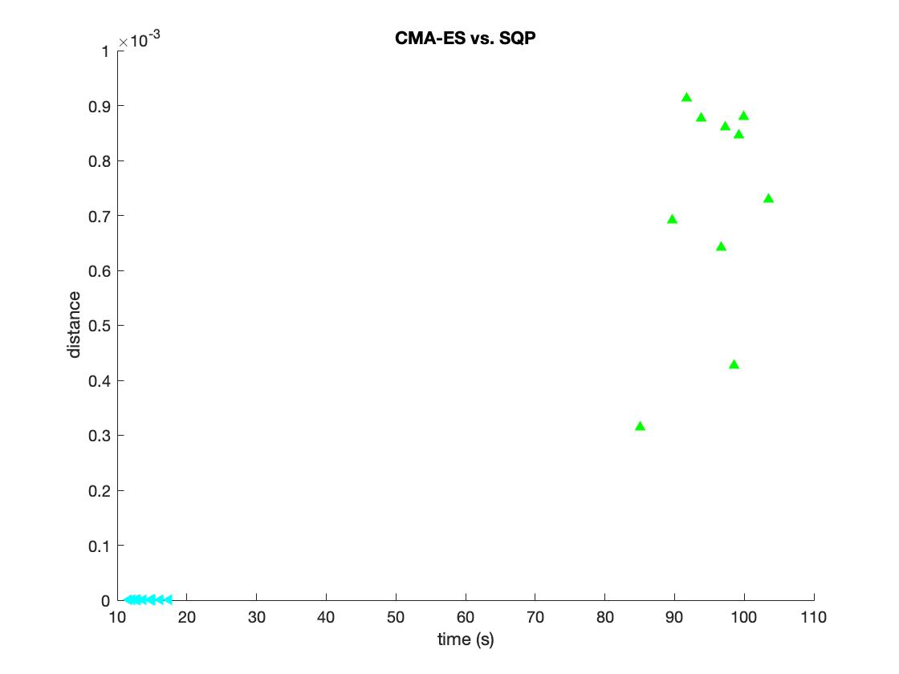 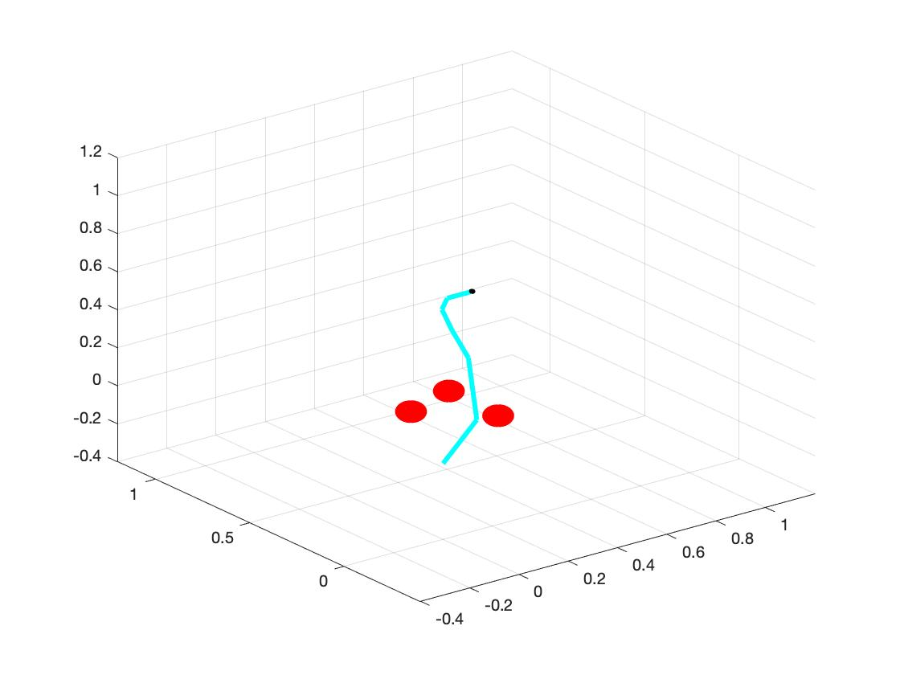
The above graph is performance comparison of CMA-ES(Cyan triangle) and SQP(green triangle). From the picture we can see that CMA-ES is way more efficient than SQP. The CMA-ES costs less time and get shorter distance from target.
The right side of above graph is our test set. We have 6 links and 3 obstacles.
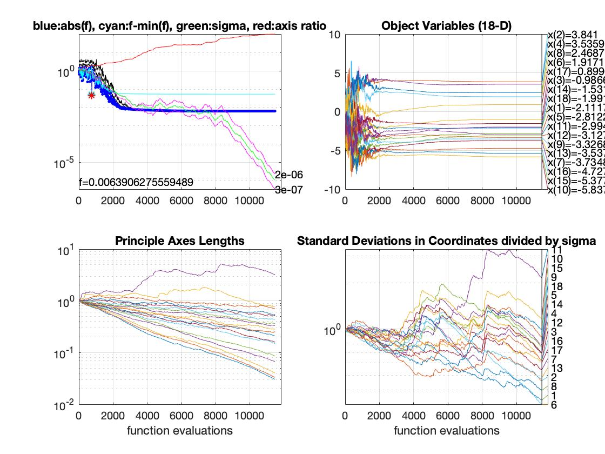
In this part, we study the local minima of inverse kinematics problems. First, we study why the problem could have multiple solutions. Then, we find a way to catch different solutions.
1. Reason of multiple Solutions:
a. The main reason of multiple solutions is degrees of freedom. We examine two different examples: one has 4 links and 3 obstacles and another one has 6 links and 3 same obstacles. After we run the program for 10 loops, the first one has quiet similar solution. However, the latter one has two different solutions, as shown in the plot below. (So I think when we have more links, the system has more methods to explore the space, and it could have more solutions. Similarly, when we have more obstacles, the system has more constraints, and it will have less freedom.)
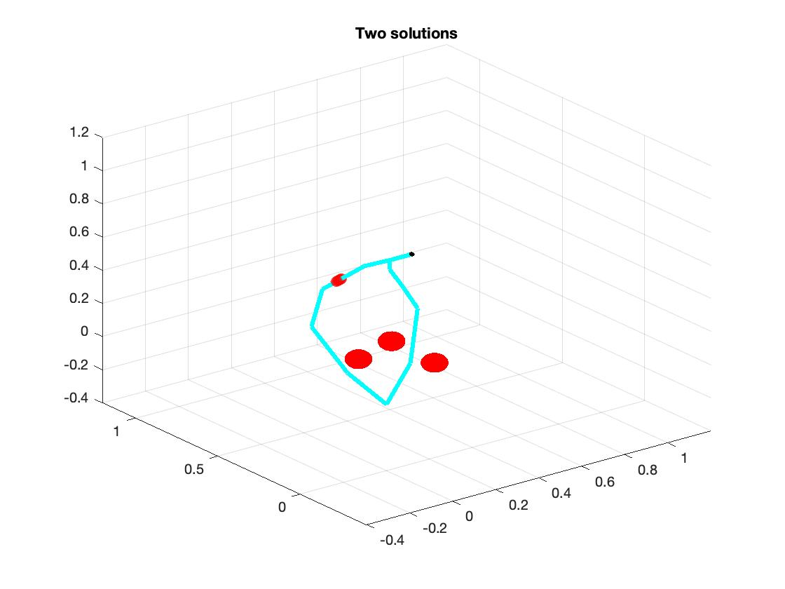
b. Another reason is random initialization. We use random initialization to initialize joints of each links. It is possible that a large number of initial joints could end up in same solution and small amount of initial joints end up in another solution. In order to get the best result, we run the optimization 20 loops with different random initializations and select the best result (shortest distance) from these.
2. Catch Different Solutions:
In order to provide the user with different solutions, we record each solutions during the run time. After optimization, we calculate distances of the solutions from each other, and provide users with two solutions which have largest distance.
1. This project roughly finished the inverse kinematice of a simple model. After comparing each algorithms include sqp, interior-point, trust-region-reflective and CMA-ES, we find out the CMA-ES algorithm has the best performance. Then we try to find out the second local minimum by calculating the distance of different optimal output.
2. I think I should spend some time to understand the usage of CMA-ES algorithm, and learn the advantages and disadvantages of different algorithms.
3. The "derivative" part of my project is quite poor. I think I need to find more sophisiticated way to numerical differential.